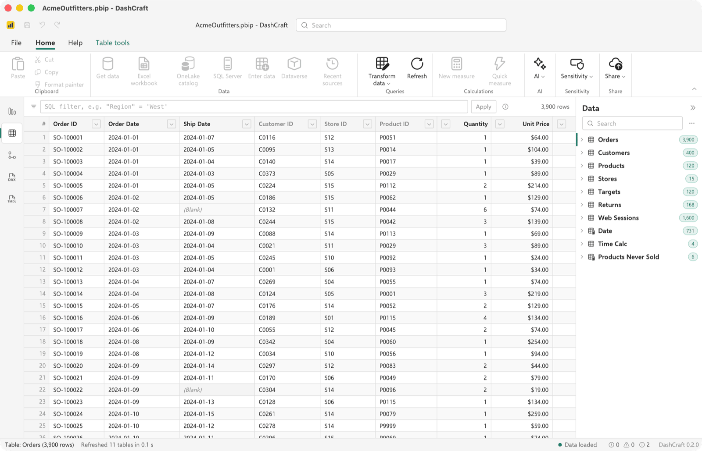

Draft translation: please check it with a native speaker before release.
このページは OCR デモの一部です。ステータス：MVP。
アプリの画面キャプチャもテキストです。ここではクエリエディタを一行ずつ読み取るので、列名やメジャー名で検索するとこのページが見つかります。
表はテキストの行として読み取られます。そのセルは検索で見つかりますが、表の構造はまだ保持されません。

クレジット：DashCraft プロジェクトのスクリーンキャプチャ。MIT または Apache-2.0 ライセンスです。データは架空のものです。